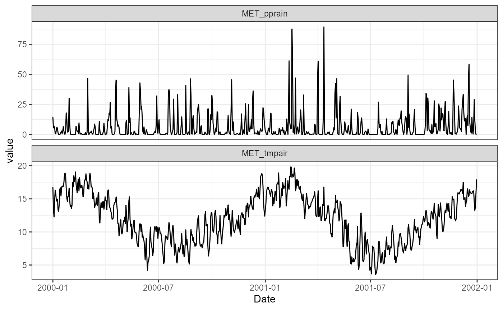

Download NZ point meteorological data
Currently, there are ERA5-Land data (~9km grid spacing) archived for New Zealand (166.5/-46.6/178.6/-34.5) for the time period 1980-2023 with the main meteorological variables (air temperature, dewpoint temperature, wind u-vector at 10m, wind v-vector at 10m, total precipitation, snowfall, surface level pressure, downwelling shortwave radiation, downwelling longwave radiation) required to drive hydrological and hydrodynamic models. This can be easily downloaded using the example below.
lon <- 176.2717
lat <- -38.079
variables <- c("MET_tmpair", "MET_pprain")
met <- get_era5_point(lat = lat, lon = lon, years = 2000:2001,
variables = variables)
summary(met)
#> Date MET_tmpair MET_pprain
#> Min. :2000-01-01 Min. : 3.567 Min. : 0.0000
#> 1st Qu.:2000-07-01 1st Qu.: 9.178 1st Qu.: 0.1464
#> Median :2000-12-31 Median :12.053 Median : 1.5939
#> Mean :2000-12-31 Mean :11.967 Mean : 6.3207
#> 3rd Qu.:2001-07-01 3rd Qu.:14.835 3rd Qu.: 6.9353
#> Max. :2001-12-31 Max. :19.837 Max. :89.4112
library(ggplot2)
library(tidyr)
met |>
pivot_longer(cols = c(MET_tmpair, MET_pprain)) |>
ggplot(aes(x = Date, y = value)) +
geom_line() +
facet_wrap(~name, scales = "free_y", ncol = 1) +
theme_bw()
By default, it will download all available variables.
lon <- 176.2717
lat <- -38.079
met <- get_era5_point(lat = lat, lon = lon, years = 2022:2023)
summary(met)
#> Date MET_tmpair MET_tmpdew MET_wnduvu
#> Min. :2022-01-01 Min. : 4.725 Min. :-2.106 Min. :-5.5620
#> 1st Qu.:2022-07-02 1st Qu.: 9.901 1st Qu.: 6.845 1st Qu.:-1.3116
#> Median :2022-12-31 Median :12.940 Median : 9.723 Median : 0.1794
#> Mean :2022-12-31 Mean :12.899 Mean : 9.755 Mean : 0.2274
#> 3rd Qu.:2023-07-01 3rd Qu.:15.961 3rd Qu.:12.792 3rd Qu.: 1.8215
#> Max. :2023-12-31 Max. :21.905 Max. :21.368 Max. : 5.7673
#> MET_wnduvv MET_pprain MET_ppsnow MET_prsttn
#> Min. :-4.82260 Min. : 0.0000 Min. :0.000e+00 Min. :93756
#> 1st Qu.:-1.09642 1st Qu.: 0.1583 1st Qu.:0.000e+00 1st Qu.:96870
#> Median : 0.18915 Median : 1.6596 Median :0.000e+00 Median :97352
#> Mean : 0.07119 Mean : 8.1192 Mean :1.521e-16 Mean :97314
#> 3rd Qu.: 1.25388 3rd Qu.: 10.5166 3rd Qu.:0.000e+00 3rd Qu.:97879
#> Max. : 5.16590 Max. :106.9180 Max. :3.470e-15 Max. :99473
#> MET_radswd
#> Min. : 8.615
#> 1st Qu.: 93.090
#> Median :150.059
#> Mean :164.618
#> 3rd Qu.:229.137
#> Max. :386.774Derive other meteorological variables
The downloaded ERA5 data can be converted to other meteorological
variables using the AEME::expand_met() function. Which will
calculate the following variables:
-
MET_tmpdew: Dew point temperature (°C) -
MET_wndspd: Wind speed (m/s) -
MET_wnddir: Wind direction (°) -
MET_radlwd: Longwave radiation (W/m²) -
MET_cldcvr: Cloud cover (fraction) -
MET_prmslp: Mean sea level pressure (Pa) -
MET_humrel: Relative humidity (%) -
MET_prvapr: Vapour pressure (Pa)
To use this function, you will need to provide the latitude, longitude, and elevation of the site. Elevation is required to calculate the mean sea level pressure and cloud cover.
We can access the elevation data using the
get_dem_value() function. This function uses the LINZ data
service to obtain the elevation value for a given latitude and longitude
using the national 8m digital elevation model (DEM) layer (ID:
51768).
This requires a LINZ API key which can be obtained by visiting the LINZ
website and registering for an account. Then adding it to your R
session using the add_linz_key() function.
elev <- get_dem_value(lat = lat, lon = lon)
elev
#> [1] 282
met <- AEME::expand_met(met, lat = lat, lon = lon, elev = elev)
summary(met)
#> Date MET_radswd MET_radlwd MET_cldcvr
#> Min. :2022-01-01 Min. : 8.615 Min. :186.7 Min. :0.1580
#> 1st Qu.:2022-07-02 1st Qu.: 93.090 1st Qu.:248.6 1st Qu.:0.5600
#> Median :2022-12-31 Median :150.059 Median :288.2 Median :0.7300
#> Mean :2022-12-31 Mean :164.618 Mean :291.7 Mean :0.7058
#> 3rd Qu.:2023-07-01 3rd Qu.:229.137 3rd Qu.:332.2 3rd Qu.:0.8738
#> Max. :2023-12-31 Max. :386.774 Max. :410.8 Max. :1.0000
#> MET_tmpair MET_airmax MET_airmin MET_dewmax MET_dewmin
#> Min. : 4.725 Min. :0 Min. :0 Min. :0 Min. :0
#> 1st Qu.: 9.901 1st Qu.:0 1st Qu.:0 1st Qu.:0 1st Qu.:0
#> Median :12.941 Median :0 Median :0 Median :0 Median :0
#> Mean :12.899 Mean :0 Mean :0 Mean :0 Mean :0
#> 3rd Qu.:15.961 3rd Qu.:0 3rd Qu.:0 3rd Qu.:0 3rd Qu.:0
#> Max. :21.905 Max. :0 Max. :0 Max. :0 Max. :0
#> MET_humrel MET_tmpdew MET_prvapr MET_prsttn
#> Min. :50.18 Min. :-2.106 Min. : 5.242 Min. :93756
#> 1st Qu.:74.78 1st Qu.: 6.845 1st Qu.: 9.918 1st Qu.:96870
#> Median :82.01 Median : 9.723 Median :12.059 Median :97352
#> Mean :81.77 Mean : 9.755 Mean :12.455 Mean :97314
#> 3rd Qu.:89.29 3rd Qu.:12.792 3rd Qu.:14.781 3rd Qu.:97879
#> Max. :99.71 Max. :21.368 Max. :25.445 Max. :99473
#> MET_prmslp MET_wndspd MET_wnddir MET_wnduvu
#> Min. : 96901 Min. :0.079 Min. : 0.909 Min. :-5.5620
#> 1st Qu.:100164 1st Qu.:1.517 1st Qu.: 77.121 1st Qu.:-1.3120
#> Median :100663 Median :2.375 Median :168.021 Median : 0.1795
#> Mean :100637 Mean :2.502 Mean :173.417 Mean : 0.2274
#> 3rd Qu.:101219 3rd Qu.:3.388 3rd Qu.:261.986 3rd Qu.: 1.8213
#> Max. :102904 Max. :7.405 Max. :358.476 Max. : 5.7670
#> MET_wnduvv MET_pprain MET_ppsnow
#> Min. :-4.8230 Min. : 0.0000 Min. :0
#> 1st Qu.:-1.0967 1st Qu.: 0.1585 1st Qu.:0
#> Median : 0.1890 Median : 1.6595 Median :0
#> Mean : 0.0712 Mean : 8.1192 Mean :0
#> 3rd Qu.: 1.2537 3rd Qu.: 10.5162 3rd Qu.:0
#> Max. : 5.1660 Max. :106.9180 Max. :0